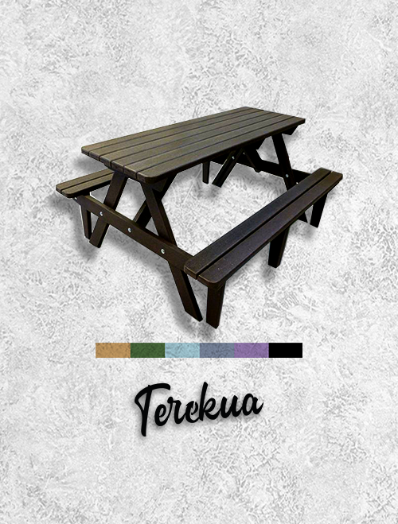

Lo que hacemos
Nuestra misión
Contribuir a la sustentabilidad ambiental mediante la creación de productos Terekua atractivos y duraderos.Durante siete años, hemos estado reciclando, procesando y diseñando productos sostenibles para exteriores. Nuestra misión es salvar los envases de residuos plásticos que, de otro modo, se destinarían al vertedero o la incineración. Reutilizamos estos desechos, transformándolos en productos Terekua duraderos y prácticos que no requieren mantenimiento y tienen un impacto ambiental positivo.
Lista de verificación
Beneficios de Terekua
- Alternativa ecológica a la madera
- No se parte ni astilla
- Libre de mantenimiento
- Libre de podredumbre
- Resistente a la infestación
- Bajo riesgo de resbalones para terrazas, plataformas, pasarelas y escalones
- Jet lavable
- Receptivo a los tornillos: fácil de perforar, aserrar y unir
- Costos de vida útil reducidos
- No se requieren pinturas ni conservantes
- no sanguijuela
- Reduce el requerimiento para la deforestación
- Evita problemas de procedencia asociados con la madera.
- No absorbe agua ni humedad y se seca rápidamente
- Resistente al clima
- Resistente al vandalismo y al robo
- Libre de podredumbre
- 10 años de garantía de componentes sin objeciones
Lo que hacemos
Nuestra misión
Contribuir a la sustentabilidad ambiental mediante la creación de productos Terekua atractivos y duraderos.Durante siete años, hemos estado reciclando, procesando y diseñando productos sostenibles para exteriores. Nuestra misión es salvar los envases de residuos plásticos que, de otro modo, se destinarían al vertedero o la incineración. Reutilizamos estos desechos, transformándolos en productos Terekua duraderos y prácticos que no requieren mantenimiento y tienen un impacto ambiental positivo.
PARA SATISFACER SUS NECESIDADES
Una amplia gama de productos
Cada Terekua está diseñado para durar décadas.Ofrecemos una variedad de productos para ofrecer, desde escalones y pasarelas hasta bancos y mesas de pícnic hasta algo totalmente personalizado y diseñado para satisfacer sus necesidades específicas. Nuestros productos Terekua son tan robustos que tienen una expectativa de vida de más de 30 años. Los productos Terekua son más económicos y ecológicos que el concreto, más duraderos y duraderos que la madera, y cada producto viene con una garantía de componentes de 10 años sin objeciones.
-

Reposera Exterior
Reposera realizada en madera Plástica.
-

Mesa para Pícnic
Mesa para uso exterior realizada con madera Plástica